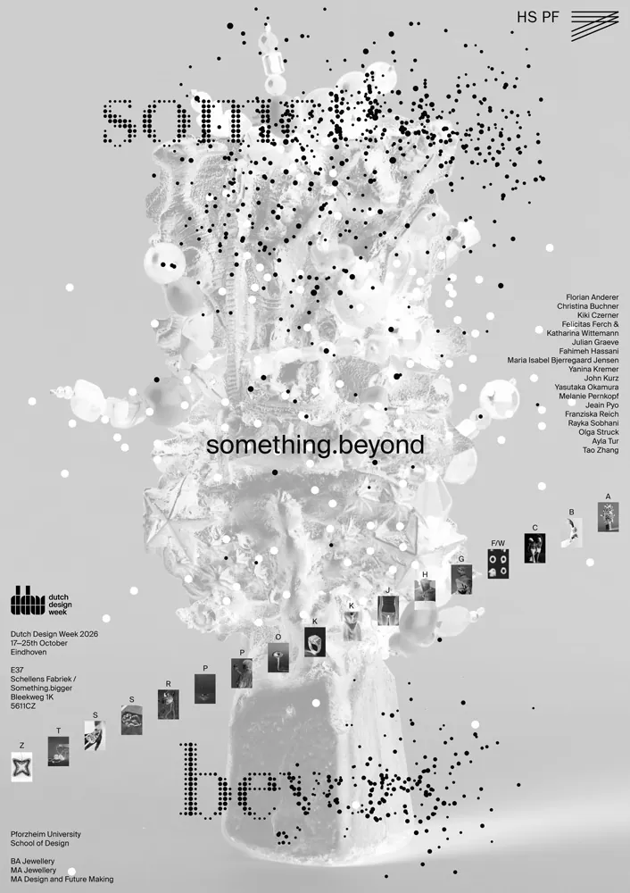
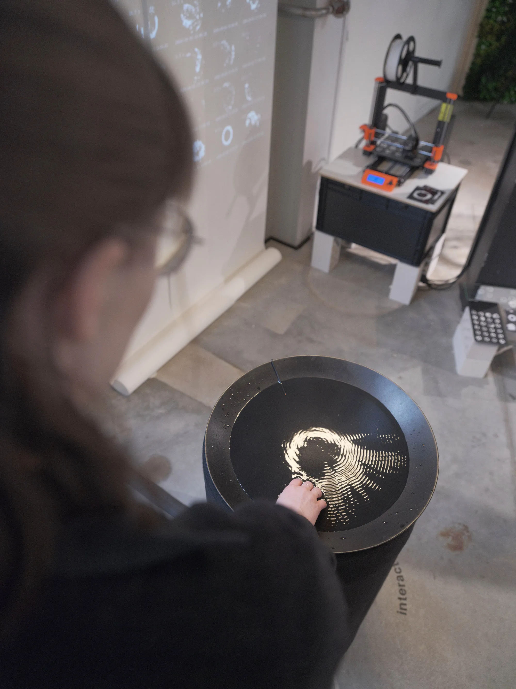
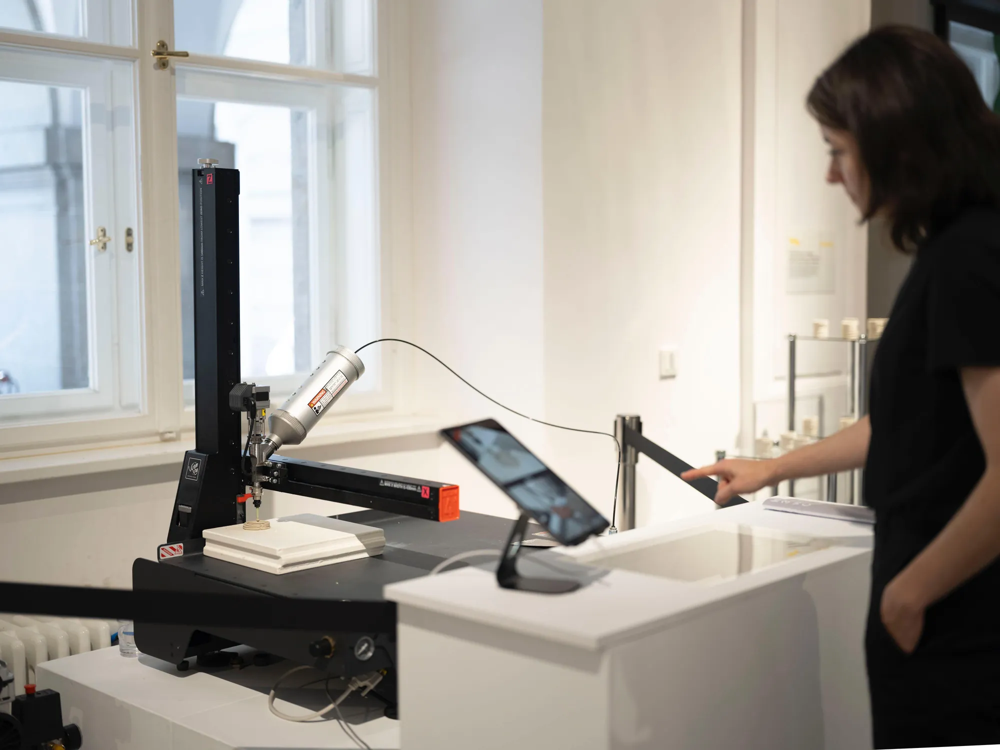
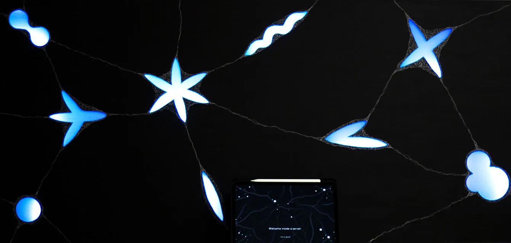

Index of projects
-
01

DDW something.beyond
2026
Identity & Editorial
-
02

equal matter
2025 – 2026
Installation & Exhibition
-
03
 Symbiotic Machine
2025 – 2026
Symbiotic Machine
2025 – 2026
Material & Making
-
04

From Gesture to Object
since 2025
Material & Making
-
05
 Flüchtige Formen
2025
Flüchtige Formen
2025
Installation & Exhibition · Material & Making
-
06
 Human AI
2023 – 2025
Human AI
2023 – 2025
Interface & Realtime
-
07
 Active Wear
2023
Active Wear
2023
Interface & Realtime
-
08
 Auratic Digitalism
2022 – 2023
Auratic Digitalism
2022 – 2023
Installation & Exhibition
-
09
 Luv & Lee
2020 – 2022
Luv & Lee
2020 – 2022
Identity & Editorial
-
10
 inter
2021
inter
2021
Identity & Editorial
-
11

inside a server
2020 – 2021
Interface & Realtime